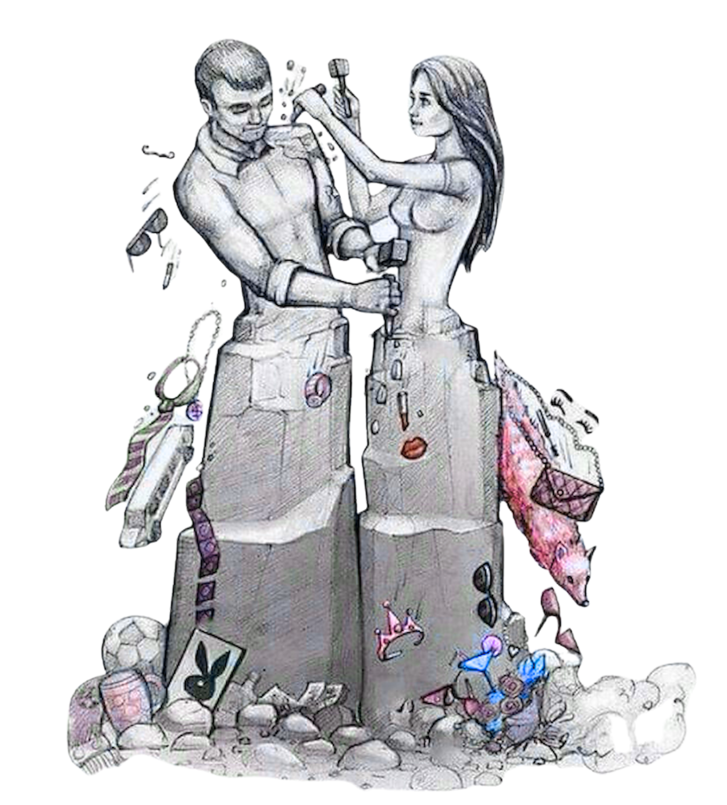
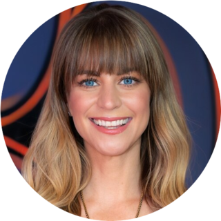
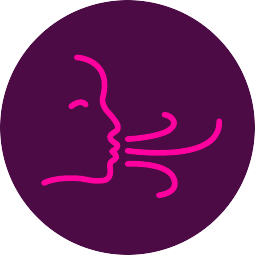
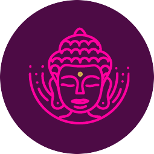
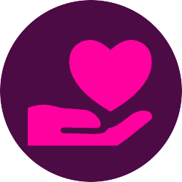
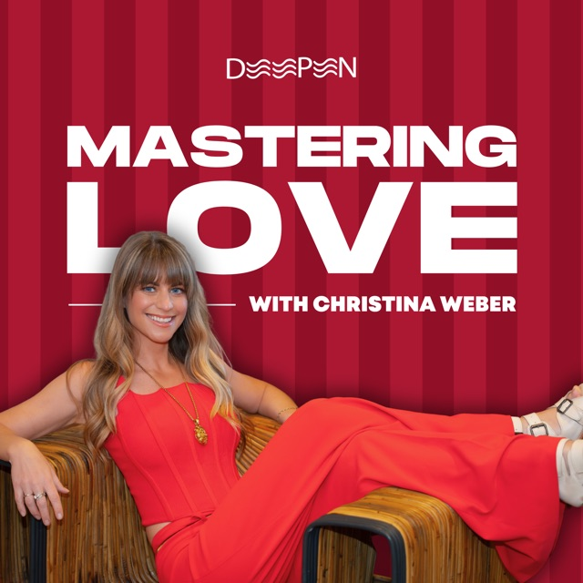

I grew up watching my parents struggle with each other.
My high school sweetheart cheated on me and lied about it.
Then came years of trial and error in New York City and Los Angeles.
No one ever taught me how to do love well.
Most of us never learn. Our schools cover history, chemistry, and calculus. They neglect nearly everything about healthy relationships.
So we guess. And when it hurts, we decide something is wrong with us. Or with them.
Nothing is wrong. You were just never taught.
In the fall of 2018, I discovered therapist Shelly Bullard's Four Pillars of a Conscious Relationship. Everything finally made sense.
Of everything I've studied, this is what I come back to again and again. Grounded. Simple. True in romance, friendship, and business.
It's how we practice at WeDeepen. And when I share it with someone I'm dating, I watch their whole nervous system relax.
Love is not something you find. Love is who you are. And that's what we're here to practice.
Your intimacy journey is your life story.
Let's make it a good one, together.

People are unsatisfied in love. And believe it or not, this is a good thing.
When a system breaks down, that's when it changes. The old model said: find the right person, meet each other's needs, live happily ever after. It works for a few years. Then it stops working, and we feel cheated.
Something better is emerging. We call it a conscious relationship.
Your growth. Growth as a couple. Growth that makes the world a better place. And you don't need a partner to begin. Partnered, dating, or solo, these pillars apply to every relationship you're in, starting with the one with yourself.
This doesn't mean you don't care what happens. You can still dream about where this goes.
It means you're more committed to growing than to making it "work."
When growth stops, we shrink to keep the peace. We bend to please. Soon love feels like a cage.
A conscious couple chooses growth, even when it's scary. Even at the risk of outgrowing each other. That's what keeps love alive.
Instead of asking "Will this work out?" ask "Who do I get to become here?"
We all carry wounds from the past. Closeness will find them.
At some point, you'll feel abandoned. Trapped. Rejected. Overlooked.
Those feelings are real. But your partner didn't cause them. They come from old wounds you brought with you. The good news: what's yours, you can change.
When something stings, pause and ask: What part of this is mine?
There's room to feel anything. Jealousy. Desire. Insecurity. Grief. Fantasies you've never said out loud.
And there's room to share them.
What your partner shares may trigger the heck out of you. You let them be honest anyway, because you'd rather know them than keep them comfortable.
Radical honesty is how we finally feel known, seen, and truly understood.
We treat love like a destination. We chase the peak feeling, and when it fades, we think we failed.
Love is a practice. Of acceptance, presence, forgiveness. It shows up in your hello. In your patience on a hard day. In staying open when it's easier to shut down.
The answer is different every time. That's the adventure.
And like any practice, it gets better with company.



In my Biohacking Conference talk, Hack Your Love Life, I share the stories behind these pillars and tools you can use tonight.
Because love isn't just read. It's lived.
You can't learn to swim from a book. Love works the same way. The pillars come alive when you practice them with people doing the same. That's why I built WeDeepen.

Choosing growth over comfort and connection over protection takes courage. You're already doing it, just by reading this far.
Be patient with yourself. Practice. Play. Come back to these pages whenever you need them. And reply to my email to tell me which pillar stumps you most. I read every reply.
And when you're ready to practice with us, we'll be here.